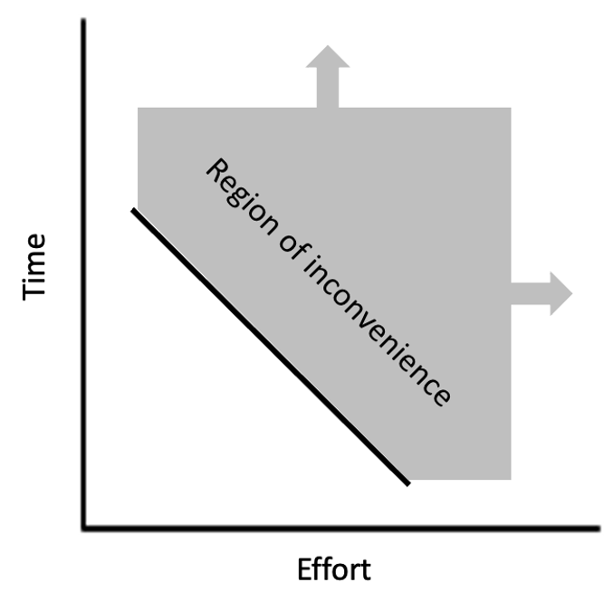

Personal convenience makes everything better.
I
A bike rack that hangs on the trunk must be installed every time (since it prevents access to the trunk and can be easily stolen). A bike rack that is permanently installed on the hitch takes five seconds to pivot down and 15 seconds to secure the bike.
I am now more likely to ride my bike on trails that require me to drive there.
II
A text editor that requires restarting the program in order to save large files dissuades the person from working on or adding to that file. A text editor that saves large files effortlessly makes the process seamless and easy.
I am now more likely to add entries into my Links.
III
A corded vacuum requires time and effort spent unwrapping the cord, plugging it in, replugging it in because the cord is too short to go all the way around the house, then wrapping the cord back up. A cordless vacuum requires no preparation or switching cost.
I am now more likely to vacuum around the house.
IV
A long walk to the factory floor takes time and energy out of an already-tired engineer. A short walk minimizes time and energy spent.
I am now (well, would be, since this will never be the case) more likely to go into the factory on a more regular basis.
V
Individually cooking healthy meals every night takes time: preparation, cooking, and clean-up. Meal prepping everything in one go using mass cooking methods (slow cooker, electric skillet, etc) compresses multiple meals into a single. albeit slightly longer, cooking session.
I am now more likely to eat healthy meals.
VI
Driving to exercise takes money and time. Having the ability to adequately exercise at home provides multiple advantages, but especially time: simply walk into the garage/room/backyard at any time and start exercising.
I am now more likely to reach my training goal for the week.
VII
[FINISH]
IX
X
Inconvenience prevents things from getting done more than most people realize or give credit for. Importance and urgency can be irrelevant if the inconvenience value (ICV) is high enough.
ICV units vary between time and energy depending on the situation. Low-effort, time-consuming tasks are generally mundane and provide little satisfaction. High-effort, short-duration tasks require energy and concentration to complete, two things that some individuals may not be willing to provide. ICV is a graph or spectrum (choose a favorite visualization), with many values between these two extremes, and subjective, with the individual defining what "time-consuming" and "high-effort" are:
Willpower is finite against inconveniences, meaning there is only one solution: minimize or eliminate. Like in other aspects of life, declaring war is a solution that can return immense benefits in the form of productivity and happiness, among others.
[FINISH?????]Noting down inconveniences is one thing, minimizing or eliminating is another.
The first step is identification. Try to recognize whenever an ugh field pops up. These can have a variety of causes with inconvenience being one of them. Try to recognize when avoidance is happening because the task is a total pain in the ass.
The second step is figuring out why it is inconvenient. Time or effort?
The third step is brainstorming possible solutions: